Início
Todo grupo folclórico tem um sonho em comum: representar seu orgulho e tradição no país de seus ancestrais.
Conosco não foi diferente. Desde que criado o Grupo Folclórico Polonês Karolinka sempre sonhou com o dia em que teria sua maior apresentação possível: a do Festival Internacional de Rzeszów.
O grupo foi criado como uma alternativa de lazer para os jovens São-mateuenses em 1992. A partir de então se tornou referência na cidade.
Preparação para a viagem
A preparação se iniciou em meados de 2018, quando houve a proposta de participar do festival. A princípio paraceu loucura, pois tínhamos que conseguir mais de R$ 10.000 por integrante em plena crise. A determinação e pulso firme da diretoria fez a loucura se tornar realidade.
Tivemos muitos ensaios, algumas discussões, muito sacrifício por parte dos integrantes, mas nada que tirasse o ânimo da estreia internacional.
FOTOS DOS EVENTOS
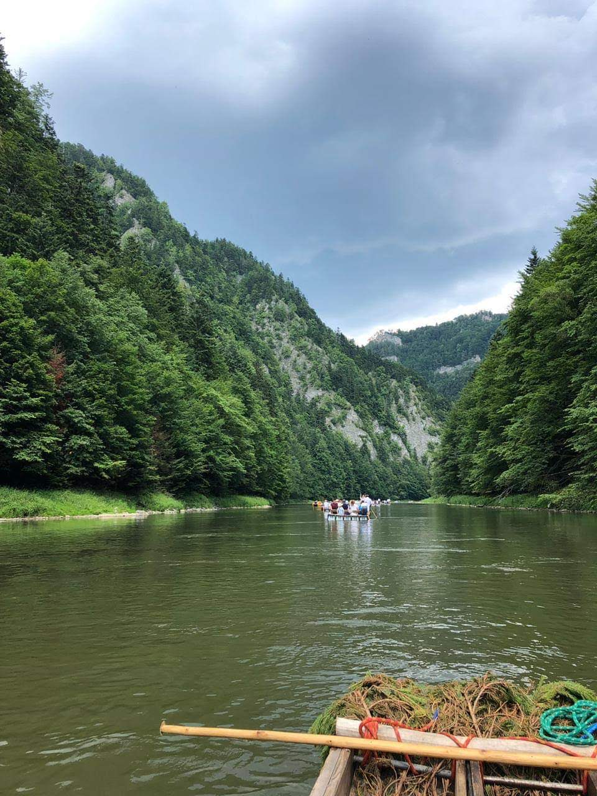
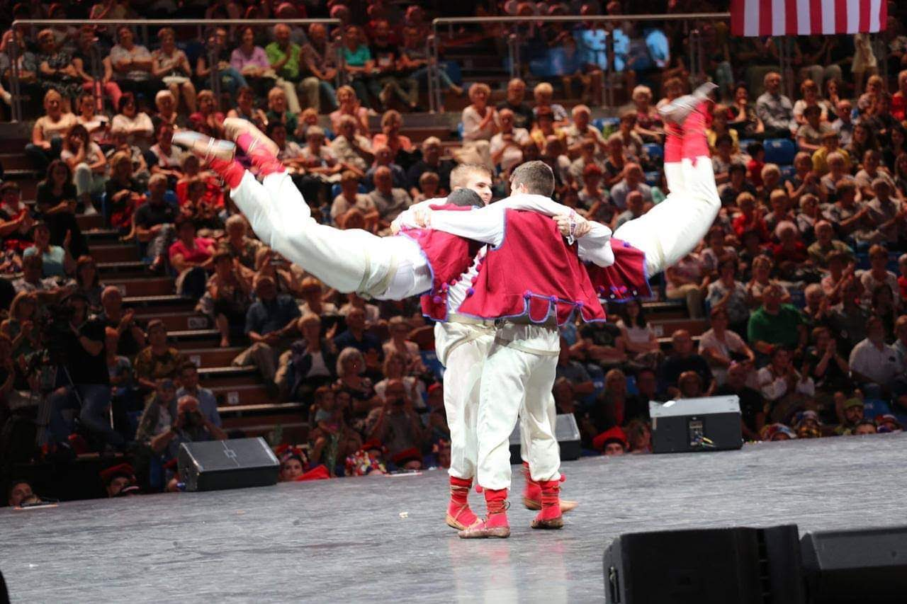
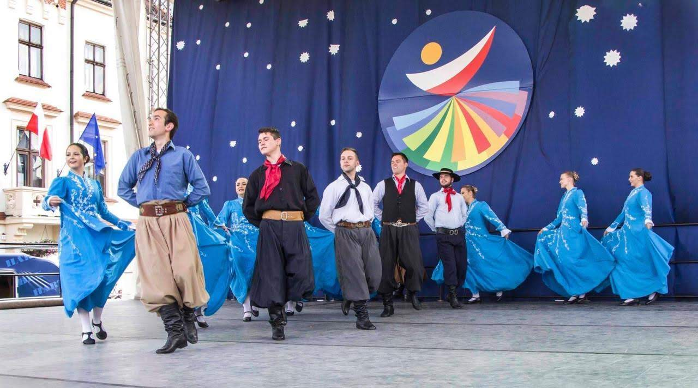
 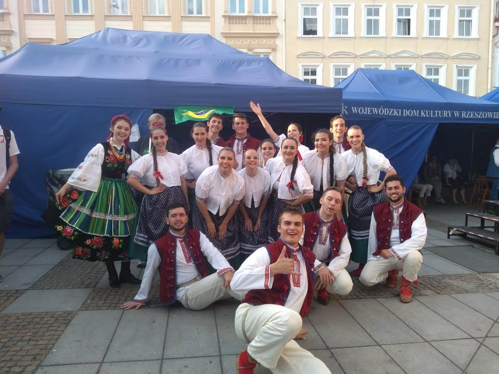
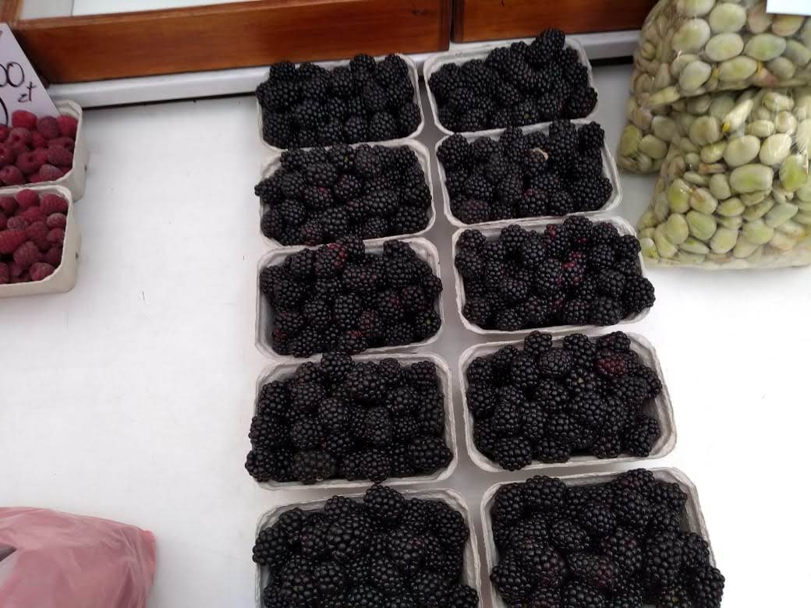
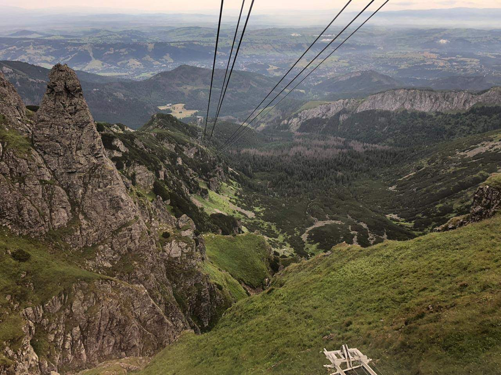
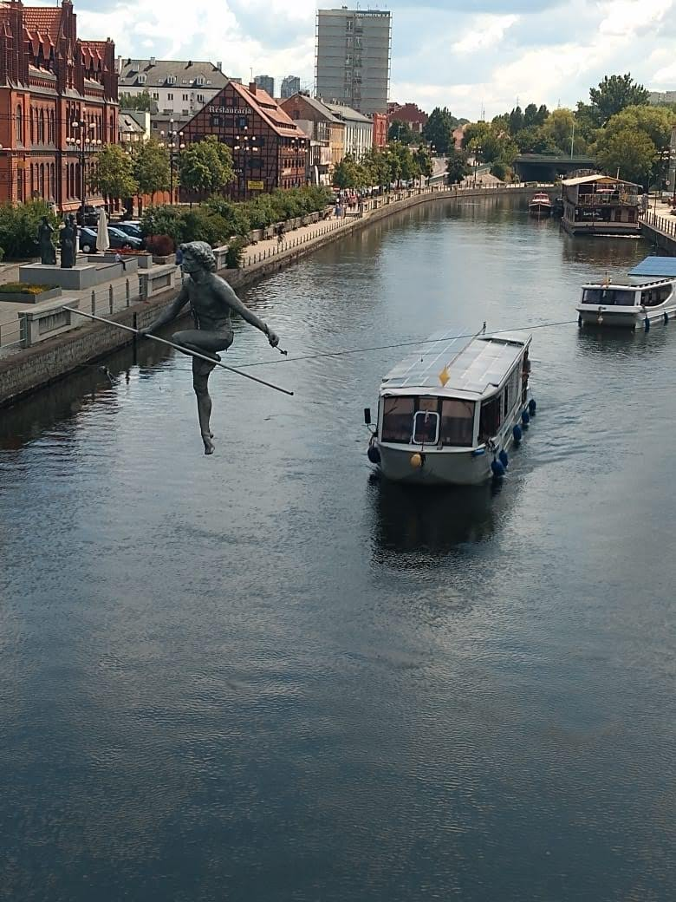
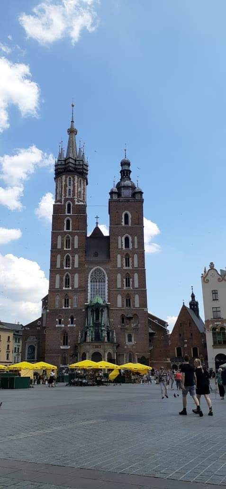
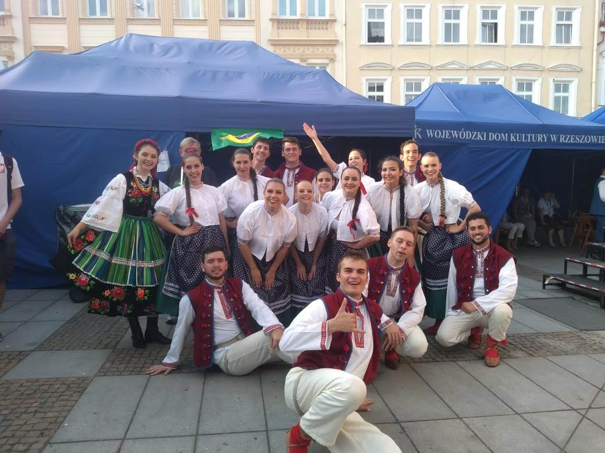
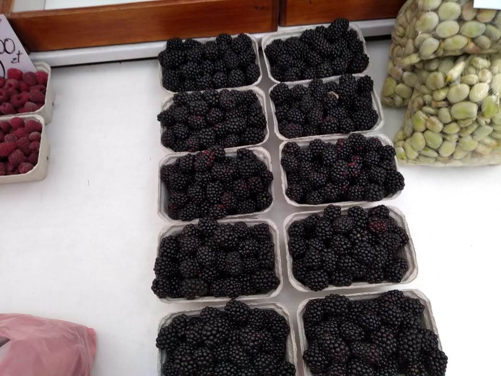
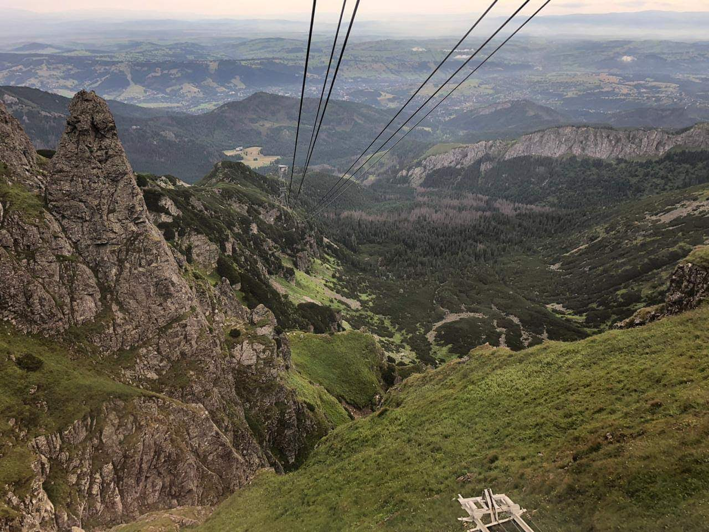
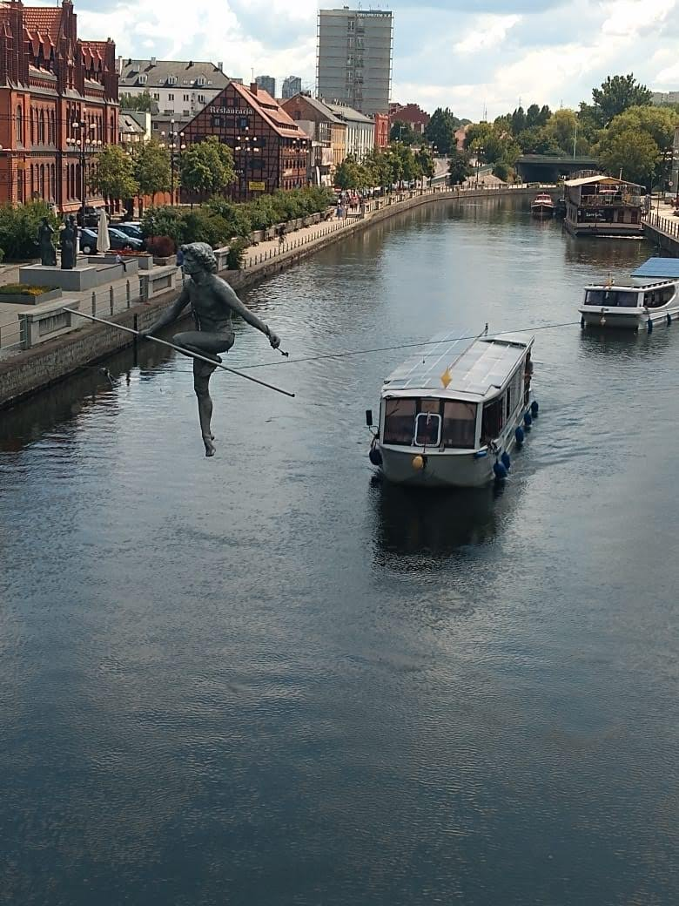
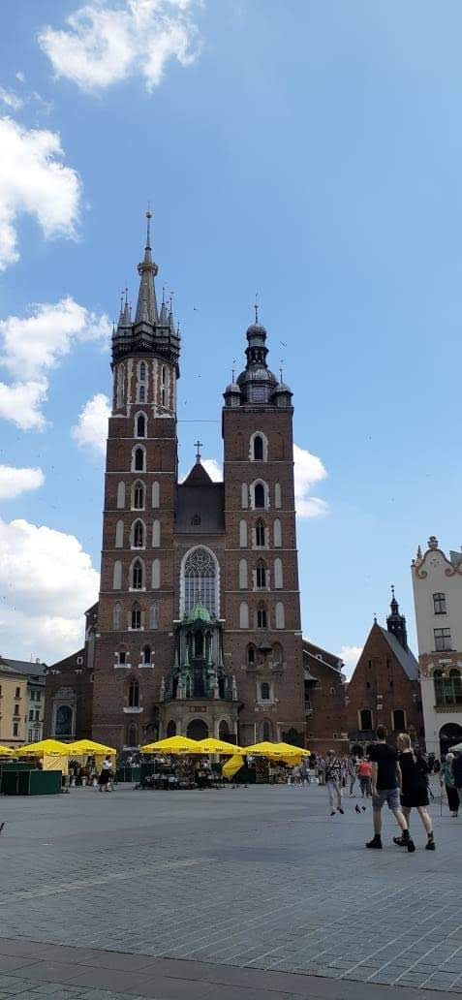
TABELAS DAS APRESENTAÇÕES
| Local | Hora | Danças |
| Bydgoszcz | 14:50 | Suita Gaúcha |
| Krzyminica | 19:00 | Suita Łowicka, Beskid śląsk, Suita Lubelska e Krakowiak |
| Rzeszów | 18:00 | Suita Łowicka, Beskid śląsk, Suita Lubelska e Krakowiak |
| Toruń | 10:00 | Suita Gaúcha |
LINKS